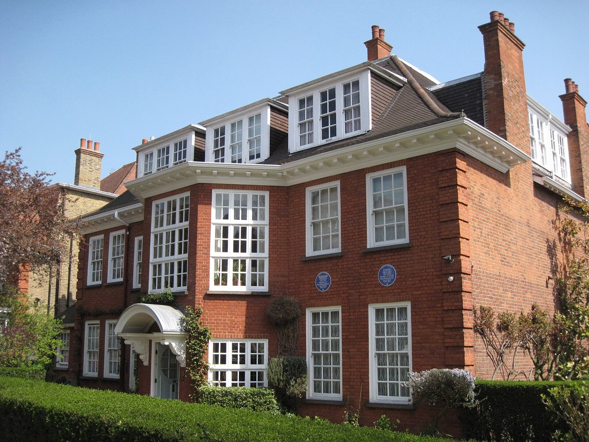

- Dil
- Türkçe · İngilizce · Fransızca
- Saat farkı
- Kışın 3, yazın 2 saat
- İlk görüşme
- Ücretsiz
- Acil
- 999 · Samaritans 116 123
Freud’un son durağı
Freud, ailesiyle birlikte 6 Haziran 1938’de Londra’ya vardı. Birkaç ay geçici bir evde kaldıktan sonra Hampstead’deki 20 Maresfield Gardens’a taşındı; Viyana’dan getirilen divanı, kitapları ve antika koleksiyonuyla çalışma odası, bu evde neredeyse olduğu gibi yeniden kuruldu. Freud burada, kanserin son evresinde bile hasta kabul etmeyi sürdürdü ve 23 Eylül 1939’da, İkinci Dünya Savaşı’nın başlamasından üç hafta sonra öldü. Kızı Anna Freud hayatının geri kalanını aynı evde geçirdi; ev bugün Freud Müzesi’dir.


Londra, Freud’dan sonra da psikanalizin en canlı şehirlerinden biri olarak kaldı. Berlin’den gelen Melanie Klein, Viyana’dan gelen Anna Freud ve İngiliz Donald Winnicott’un çalışmaları, yirminci yüzyıl psikanalizinin büyük bir bölümünü bu şehirde biçimlendirdi. Winnicott’un “geçiş nesnesi” ve “potansiyel alan” kavramları, gurbette yaşayanlar için özel bir anlam taşır: İnsan yeni bir yeri, ne tamamen geride bıraktığı memlekete ne de tamamen yeni ülkeye ait olan nesneler, alışkanlıklar ve törenlerle yaşanabilir kılar. Bu sitedeki Gurbet ve Ana Dil yazısı bu fikri ayrıntılı olarak ele alıyor.
Kuzey Londra’dan Manchester’a
Birleşik Krallık’taki Türkçe konuşan topluluk, Avrupa’nın geri kalanından farklı bir tarihe sahiptir. Burada bir işgücü anlaşması yoktu; ilk büyük topluluğu 1950’ler ve 1960’larda gelen Kıbrıslı Türkler oluşturdu. Onları 1970’lerden itibaren, bir kısmı siyasi nedenlerle, Türkiye’den gelen Türk ve Kürt aileler izledi. Kuzey Londra’nın Haringey, Enfield, Hackney ve Islington semtleri, Green Lanes’in dükkânlarından Dalston’ın sokaklarına, bu üç topluluğun iç içe yaşadığı yerler oldu. Bugün bunlara üniversiteler, şirketler ve hastaneler için gelen genç profesyoneller ve öğrenciler de ekleniyor.
Bu çeşitlilik, gurbetin İngiltere’de pek çok farklı biçimde yaşanması demektir. Kıbrıs’tan gelen bir ailenin üçüncü kuşaktan torunu, Türkiye’den yeni gelmiş bir doktor ve 1980’lerde siyasi nedenlerle göç etmiş bir ailenin çocuğu, aynı dili konuşsalar bile farklı gurbetler yaşarlar. Ortak olan şey çoğu zaman, İngilizcenin gündelik hayatın, Türkçenin ise başka bir şeyin dili olmasıdır: çocukluğun, ailenin, söylenmemiş olanın.
Görüşmelerde sık konuşulan konular
Birleşik Krallık’ta yaşayan analizanların sık getirdiği sorular arasında yalnızlık ve aidiyet, yoğun çalışma hayatının yarattığı kaygı ve tükenmişlik, ilişkiler ve karma evlilikler, iki dil arasında büyüyen çocuklar, uzaktaki aileye dair suçluluk ve yas, Brexit sonrasında belirsizleşen gelecek planları ve kalma ya da dönme kararı sayılabilir.
Pratik bilgiler
Saat farkı. Birleşik Krallık kışın Greenwich saatini (UTC+0), yazın İngiliz Yaz Saati’ni (UTC+1) kullanır. Türkiye yıl boyunca UTC+3’tür; kışın üç, yazın iki saat ileridedir. Londra’da akşam yedi, Türkiye’de kışın gece on demektir; görüşme saatleri bu farka göre birlikte belirlenir.
Sağlık sistemi. NHS kapsamındaki ruh sağlığı hizmetlerine genellikle aile hekimi (GP) aracılığıyla ulaşılır; özel sağlık sigortaları ise çoğunlukla Birleşik Krallık’ta kayıtlı uzmanlarla yapılan görüşmeleri karşılar. Bu görüşmeler her iki sistemin de dışındadır.
Dil. Görüşmeler Türkçe, İngilizce ya da Fransızca yapılabilir; diller arasında gidip gelmek mümkündür.
Acil durumlarda
Bu görüşmeler bir acil durum hizmeti değildir. Hayati bir tehlike varsa hemen 999’u ya da 112’yi arayın. İvedi ama hayati tehlike içermeyen durumlarda NHS 111’e ulaşabilirsiniz. Samaritans’a 116 123’ten günün her saati, ücretsiz ulaşılabilir; konuşmak yerine yazmayı tercih ediyorsanız Shout, 85258 numarasına “SHOUT” yazılarak ulaşılabilen bir mesaj hattıdır.
Sık sorulan sorular
Görüşmeleri İngilizce yapabilir miyiz?
Evet. Görüşmeler İngilizce, Türkçe ya da Fransızca yapılabilir; tek bir dilde kalabilir ya da diller arasında gidip gelebilirsiniz. İngilizce bilgi için İngilizce sayfaya bakabilirsiniz.
Kıbrıslı Türk bir aileden geliyorum; Türkçem Kıbrıs ağzıyla. Bu bir sorun olur mu?
Hayır. Her ağız, her şive, insanın kendi tarihinin bir parçasıdır ve görüşmelerde olduğu gibi yer alabilir. Bazı kelimelerin ancak ailede konuşulan biçimiyle bir anlam taşıması, çalışmanın malzemesinin kendisidir.
İlk görüşme ücretsizdir. Bir gün ve saat belirlemek ya da sorularınızı sormak için bana Türkçe ya da İngilizce yazabilirsiniz.
İletişim formuya da psikologhaktantay@gmail.com · English